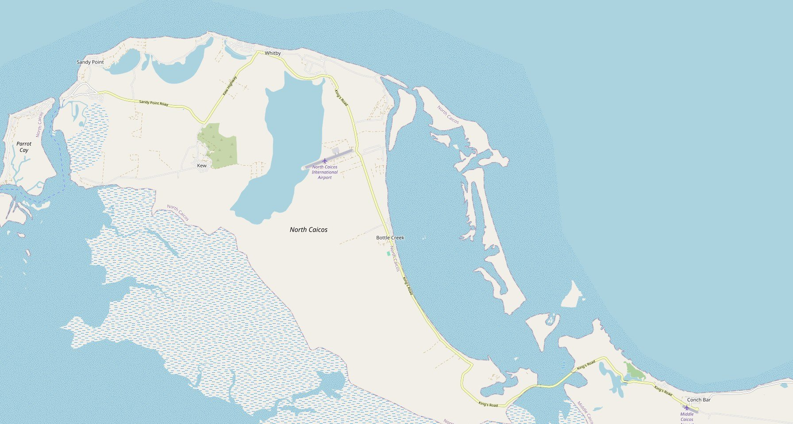
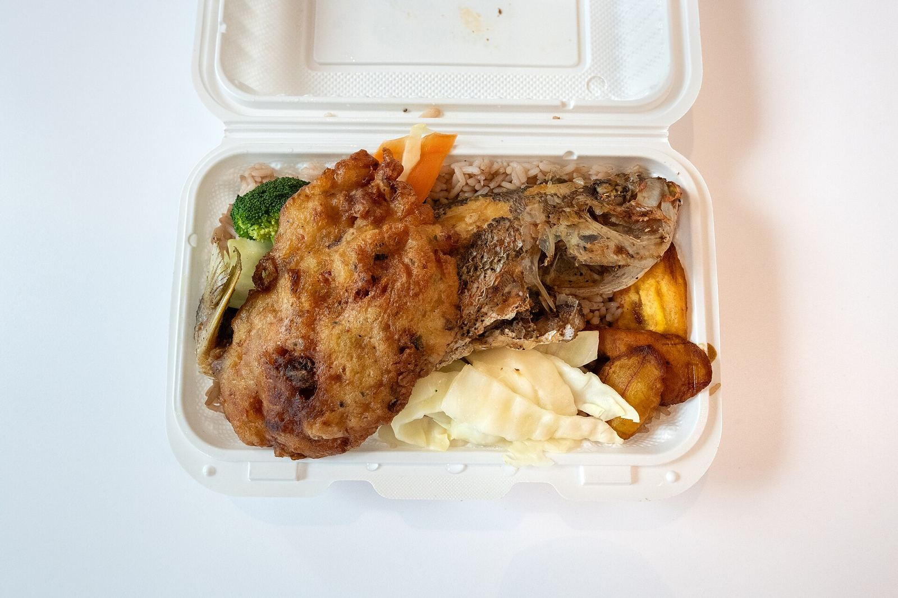
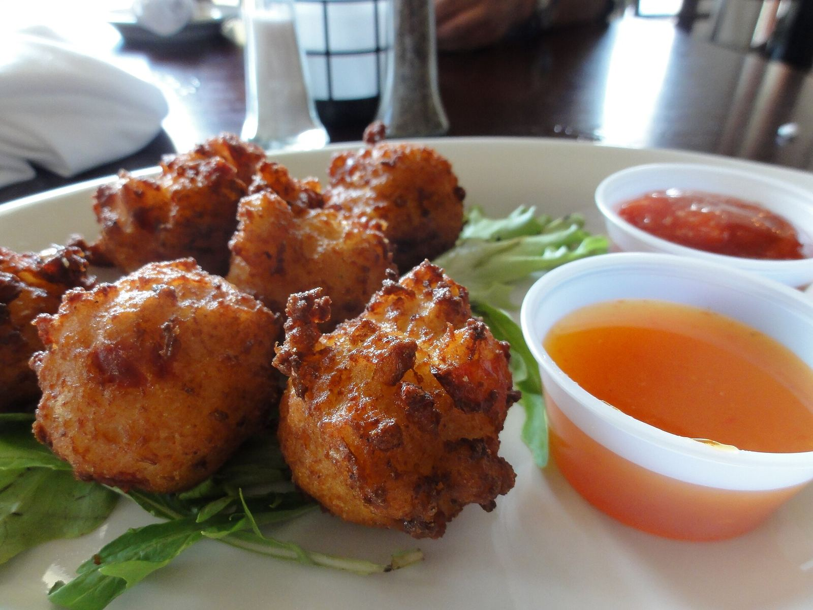
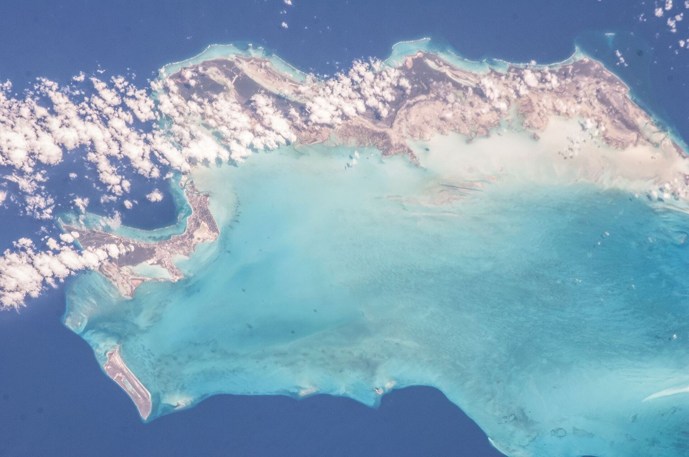

This week at Miss B's
Fish fryEvery WednesdayFried fish and live music, often with local artist Lovey Forbes
Karaoke nightEvery SaturdayLocals and visitors from both islands
TodayMonday to Saturday, 10am to 7pmOn Sundays, call ahead

Ferry Miss B's MudjinThe day across
Miss B's sits on the main road between the ferry and Middle Caicos, and many tours to the two islands stop here to eat.
Morning
Ferry from Provo lands at Sandy Pointstart
Drive east on Sandy Point Road and King's Roadabout 25 min
Midday
Lunch on the water at Miss B's, Bottle Creek10am to 7pm
Or collect the picnic you ordered aheadready to go
Afternoon
Cross the causeway to Middle Caicosabout 20 min
Mudjin Harbour and Dragon Cayswim, then eat
Two islands, one lunch on the water
Drive times are rough, by the map. Check the ferry before you set out.
A picnic for the road
Most of the menu comes to go. Pick what you'd like, say when you'll pass through, and send it ahead so it's ready when you arrive.

What people say

Google reviews, by stars
- 5 stars
- 52
- 4 stars
- 0
- 3 stars
- 2
- 2 stars
- 0
- 1 star
- 1
Guests keep coming back to the grouper, the shrimp Alfredo, the conch chowder, the grilled lobster tail, the blackened snapper, the fish burger and the banana bread; to the view over the bay; and to Miss B, who takes the time to tell visitors about the island.
Written up by Visit Turks and Caicos Islands, Frommer's, Wanderlog and Hotels.com
Ratings from Google via Wanderlog and from VisitTCI, October 2026. What guests mention is summarised from Google reviews on Wanderlog.

Find Miss B's
The Promenade, on the water
Bottle Creek, North Caicos
- Monday to Saturday
- 10am to 7pm
- Wednesday
- Fish fry and live music
- Saturday
- Karaoke night
649 241 3939missbs1@hotmail.com
Get directionsThe Turks and Caicos Islands, seen from the International Space Station.